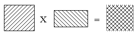
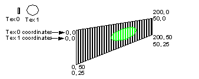

|
|
Applications
Multiple Tile Effects
Interference Textures
Lighting with Textures
The shift parameter of the tile descriptor for Tex 1 could be used to right shift the input coordinates to the required values. It would be a bad idea to use Tex 1’s coordinates as the input coordinates and then left shift to obtain Tex 0’s coordinates. This is because when you shift left, you shift zeros into the lsb’s of the coordinate, thus losing precision.
Extended Alpha Using Multiple Textures
One way to get more bits of alpha (in order to create smoother outlines) is to use two tiles. The first tile describes the RGB color of the texture, while the second tile describes the alpha channel of the texture. Render the texture in two-cycle mode. In the color combiner, select T0 as the source and in the alpha combiner select T1 as the source.
A code fragment indicates how to set the combine modes and load the textures:
Since you can access two separate tiles in two-cycle mode, it easy to achieve interference pattern effects. Of course, you can use textures that are different sizes (wrap on different intervals) to decrease the amount of apparent repetition. This is especially useful for textures on terrain or for waves on the ocean, for example.

Multiple tiles can be used for lighting effects. In the example below, a small texture is repeated many times but a small light texture is scaled up to create the effect of a spotlight. In this example you could use the input coordinates should be defined using Tex 0’s coordinates.

The 16 bit RGBA texture type is often used to texture sprites and billboards because this is the only type that allows a large number of colors. Unfortunately, this type only has one bit of alpha (which means you cannot prefilter texture edges), and can lead to pixelated texture edges.
#define MULTIBIT_ALPHA 0, 0, 0, TEXEL0, 0, 0, 0, TEXEL1
...
/* use special combine mode */
gsDPSetCombineMode(MULTIBIT_ALPHA, G_CC_PASS2),
...
/*
* Load alpha texture at Tmem = 256, notice I use a
* different load macro that allows specifying Tmem
* address.
*/
_gsDPLoadTextureBlock_4b(I4molecule, 256, G_IM_FMT_I,
32, 32, 0,
G_TX_WRAP, G_TX_WRAP,
5, 5, G_TX_NOLOD, G_TX_NOLOD),
/*
* Load color texture starting at Tmem=0
*/
gsDPLoadTextureBlock(RGBA16molecule, G_IM_FMT_RGBA,
G_IM_SIZ_16b, 32, 32, 0, G_TX_WRAP, G_TX_WRAP,
5, 5, G_TX_NOLOD, G_TX_NOLOD),
/*
* Since normal load macros use tile 0 for render, I
* need to set tile 1 manually to point at alpha
* texture.
*/
gsDPSetTile(G_IM_FMT_I, G_IM_SIZ_4b, 2, 256, 1,
0,
0, 0, 0,
0, 0, 0),
gsDPSetTileSize( 1, 0, 0, 31 < < 2, 31 < < 2),
...
/* make sure in two-cycle mode */
gsDPSetCycleType(G_CYC_2CYCLE),
|
Copyright © 1999 Nintendo of America Inc. All Rights Reserved Nintendo and N64 are registered trademarks of Nintendo Last Updated January, 1999 |